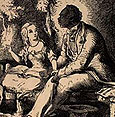

UNCLE TOM'S CABIN
For the last four years I've been building a multi-media website called *
Uncle Tom's Cabin
& American Culture.* One of its main goals is to allow you to explore the story of Stowe's story as a popular phenomenon.
It's at
http://jefferson.village.virginia.edu/utc
For Wednesday's class:
ILLUSTRATIONS
|
FIRST EDITION
&
ILLUSTRATED EDITION
|
SELECTIONS
GETTING THE DATE
1850
Compromise of 1850, proposed by Henry Clay. It included: admitting California to the Union as a free state; allowing settlers in Utah and Nevada territories to decide question of slavery by vote; banned slave trading in D.C. but allowed residents to keep the slaves they already had; revised and made more rigorous the Fugitive Slave Law... [Jessica]
SEPTEMBER 18: The Fugitive Slave Law is enacted, making it illegal to aid runaway slaves and requiring citizens to apprehend and return them to slavery, no matter where in the U.S. they are. [Sergio]
According to the Census, the North had 8 cities with populations over 100,000, while the South had one -- New Orleans. North controlled 84% of available capital, and had 81% of country's bank deposits. [Lauren]
In Strader
v
Graham, U.S. Supreme Court ruled that the Constitution does not limit a state's jurisdiction in matters pertaining to slavery. [Katie P.]
The California state legislature passed An Act for the Government and Protection of Indians that proclaimed, among other provisions, (1) whites would be able to obtain control of Indian children, (2) Indians convicted of crimes could be indentured to whites, (3) selling alcohol to Indians was a crime, (4) any Indian found near where alcohol was being sold was liable to be arrested, and indentured to a white for up to four months at a time. [Matt]
1851
FEBUARY 15: After Frederick Jenkins, an African American working in the North as a waiter, is seized by slave-catchers, he is rescued by a group of other African Americans. [Sean]
Sojourner Truth, a former slave a deeply religious Abolitionist and Woman's Rights activist, gives her "Ain't I A Woman" speech in Akron, Ohio. [Krista]
"Go west, young man" -- it was John Soule, not Horace Greeley, who coined this phrase, but it was in this year that Greeley first publicized it. [Sean]
CHRISTMAS EVE: A fire destroyed two thirds of the collection at the Library of Congress. [Chip]
1852 -- YEAR OF PUBLICATION
Presidential Election: Democratic candidate Franklin Pierce, of New Hampshire, supported the Fugitive Slave Law; Whig candidate Winfield Scott, Mexican War hero, ignored the slavery issue, causing infighting within the party; Pierce carried all but four states, proving the Whigs' days were numbered. [Jessica]
Missouri Supreme Court rules that Dred Scott is still a slave, despite his extended travels in the free states. (This decision will be upheld by the U.S. Supreme Court in 1857.) [Katie P.]
Boston Public Library founded. [Kerry]
A chapter of the Sons of Temperance (students who pledged never to drink alcohol) organized at U.Va; after 1855 they met in their own building, Temperance Hall, built near the Corner. [SR]
1853
Inspired by the success of
Uncle Tom's Cabin
, Harriet Jacobs begins writing
Incidents in the Life of a Slave Girl
. [Katie P.]
U.S. fleet under Admiral Perry arrives in Japan, seeking trade agreements. [Kerry]
Gadsden Purchase adds the last piece of territory to the lower 48. [Kerry]
B.&O. railroad connects Chicago to the east coast. [Kerry]
1854
JANUARY 1: Lincoln University chartered in Oxford, Pennsylvania. Initially known as Ashmun Institute, it was one of the country's first Negro colleges. [Carla]
1856
On the floor of U.S. Senate, South Carolina Democrat Preston Brooks beat Massachusetts Democrat Charles Sumner into unconsciousness in response to an anti-slavery speech. [Lauren]

UNCLE TOM ILLUSTRATED